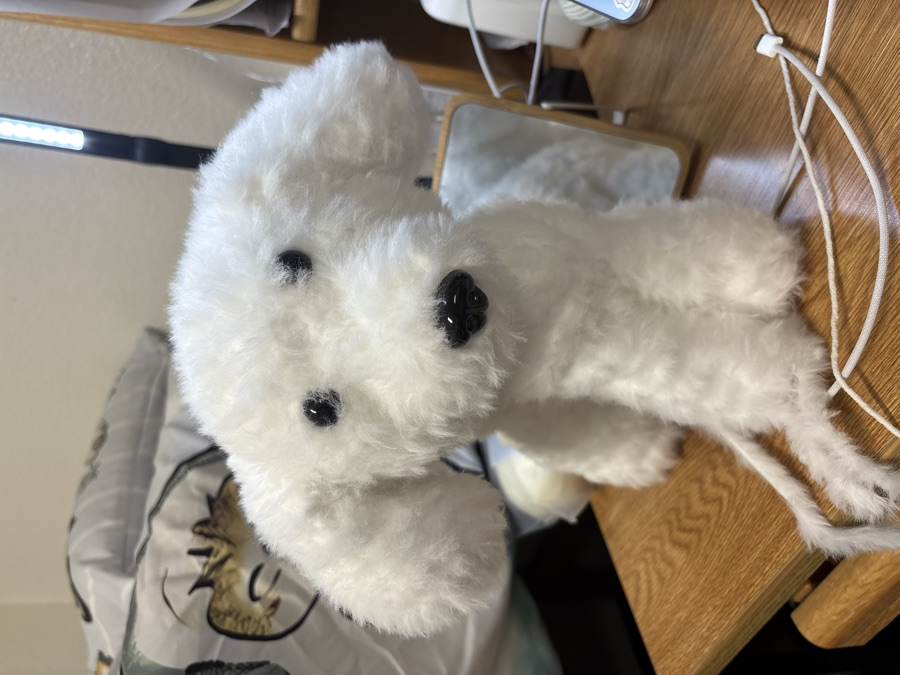
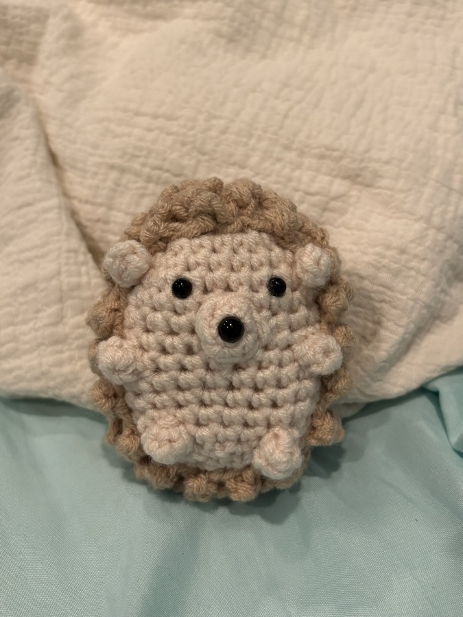
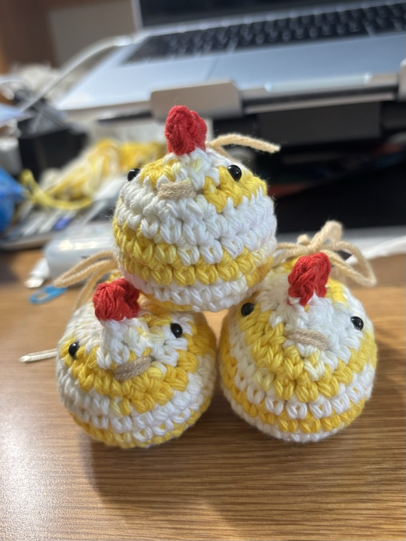
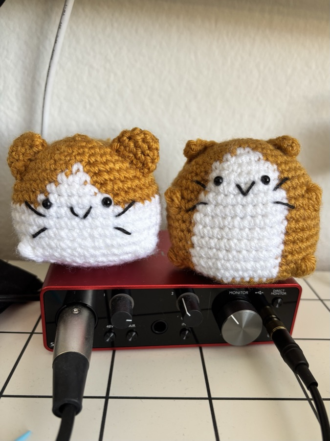

University of California, San Diego
grad. june 2027B.A. Interdisciplinary Computing and the Arts (Music) · minor in Electrical Engineering
Coursework: Digital Signal Processing · Machine Learning for Music · Music Programming · Circuits and Systems
vol. i · la jolla, california · still writing
music, signal processing & all things filtering
ICAM – Music at UC San Diego with an Electrical Engineering minor. I build sound-related things: spatial-audio research, C++ audio plugins, a theremin on a breadboard, and much more!
These days I live somewhere between Ableton and VS Code. I’m an undergraduate researcher at UCSD’s Qualcomm Institute working on spatial audio, I design and build C++ audio plugins I would use for my own music, and I make microcontrollers do my bidding. On the other side of the desk I make parody content, release original music, and post it all to a corner of the internet.
i like the parts where art and engineering refuse to stay in their lanes!
B.A. Interdisciplinary Computing and the Arts (Music) · minor in Electrical Engineering
Coursework: Digital Signal Processing · Machine Learning for Music · Music Programming · Circuits and Systems
Arts Management
Arts management, digital marketing and fundraising for the arts industry.
Qualcomm Institute, UC San Diego · under Professor Shahrokh Yadegari
a real-time, environment-aware spatializer
in plain english: an HRTF is the fingerprint your head, ears and shoulders leave on a sound before it reaches your eardrum. Measure enough of them and you can place a sound anywhere around a listener wearing ordinary headphones.
Soundbeaming steers a narrow column of sound out of a speaker array so it reaches one listener instead of filling the room. The adaptive part is the beam re-aiming itself as that listener moves.
Two time-of-flight sensors read the distance to each hand and map it to continuous pitch and volume in a theremin-style. Both ship with the same I2C address, so each one is reassigned at startup. One-pole filtering smooths the glide, and the audio callback stays decoupled from sensor polling.
github ↗A real-time channel vocoder with overlap-add STFT (Kaiser windowing), mel-scale band grouping, and per-band envelope smoothing. Carrier whitening and weighted noise injection keep unvoiced consonants intelligible, with sidechain routing and a custom animated GUI.
github ↗A host-synced LFO for rhythmic volume shaping and sidechain-style ducking. The modulation curve is drawn right in the UI with a draggable two-breakpoint editor, backed by a 10-bit lookup table that regenerates on a dirty flag instead of on every block.
github ↗An 18-day sprint. Composed and produced all five soundtracks, genres running from medieval to bedroom pop.
Two-week sprint. Composed and produced all five soundtracks, orchestral through dance pop. The OST is out as an EP.
Six-week sprint. Composed and produced all four soundtracks, noir jazz on one end, dark ambient on the other.
Written, recorded and finished in two days. Proof that a deadline is a kind of instrument.
Original parody songs about school. I go to class and I sing about it :P
Find me @vivianyaur (MOM IM FAMOUSSS)
Music, research, plugins, scoring a game, or just to talk about clouds. The inbox is open.
based in La Jolla, CA · from Los Angeles
the tidy one-page version, for the people who need one.



